operanthouseのヘッダー
Kitaya lab
Tips
銅線の延長の仕方
ビニル被覆を剥がします。
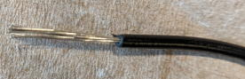
先端がバラバラにならない様に捻じります。
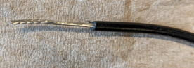
銅線同士を向かい合わせ、捻じります。
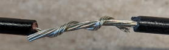
はんだ付けをします。
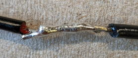
熱収縮チューブで金属部分を隠してはんだ籠手で密着させて完成です。
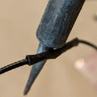
SDカードのコピー
オペラントハウスの導入が終わったSDカードのイメージ（カード内の全データ）を他のSDカードへコピーする事で時間の掛かるセットアップを省く事が出来ますがその方法をここで説明します。
1. まずコピー元として16GBのSDカードを購入し、通常のやり方でラズベリーパイOSおよびオペラントハウスの初期セットアップを全て行ってください（400GBのSDカードでも出来ますがその場合400GB全てをコピーするので5時間くらい掛り、かつ500GBのスペースがPCか外付けHDDに必要になります）。
2. 次にイメージファイルの元を作りましょう。メモ帳を開き、「RapsberrypiOsImage.img」と名付けて好きな場所に保存してください。
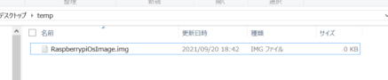
3. 次に「Win32 Disk Imager」というイメージをコピーするソフトを以下からPCにインストールしてください。
https://win32diskimager.org/#download
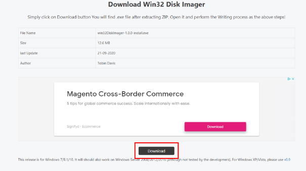
インストール後ソフトを立ち上げるとこのような画面が現れます。コピー元のSDカードをUSB接続し、Image Fileの所に先ほど作ったファイルを選択し、Deviceの所でSDカードを指定してReadボタンを押してください。これでSDカードの中身がPCへコピーされます（保存先をUSBハードディスクにする事もできます）。
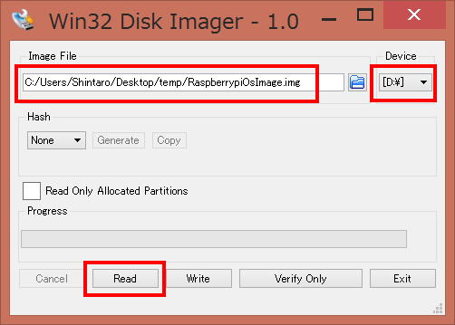
4. Readが完了したらコピー本のSDカードを外し、コピー先の400GBのSDカードを差してください。そしてWriteボタンを押せば書き込みが始まります。16GBであれば15分程度で完了すると思います。＜注意＞コピー先のSDカードに元から入っているデータは全て消えますので注意してください
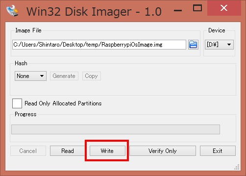
5. 16GBのSDカードのイメージをコピーすると400GBの容量があっても16GBのSDカードとしてラズベリーパイから認識されてしまいます。そこで次に容量の上限を再設定します。コピーが終わったSDカードをラズベリーパイに差しターミナルを開き、以下のコマンドを入力してください。
$ sudo raspi-config
するとこのような画面が現れるのでAdvanced Optionsを矢印キーで選択してエンターを押してください。
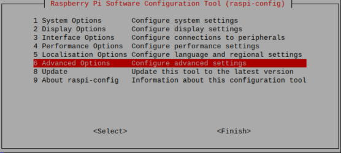
次にExpand Filesystemを選択してエンターキーを押してください。その後矢印キーでFinishを選択して再起動してください。
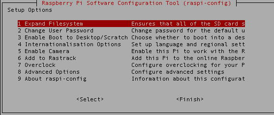
6. 容量が増えたか確認するためターミナルに以下を入力してください。
$ df -h
/dev/rootの欄にSDカードの容量が表示されます。400GB付近になっていたら成功です。もし容量が小さい場合、もう一度再起動してみてください。
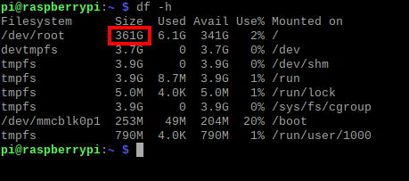
GmailでのSMTPサーバーの設定の仕方
もしオペラントハウスから送信されるメールの内容を秘密にしたい場合はユーザー自身でSMTPサーバーを用意する必要があります。ここでは2025/10/8時点での方法を解説します。
まず新たなgoogle accountを作成し、そのアカウントでログイン後、メニューのAccount→Securityを開き、ご自身の携帯電話の電話番号などを用いて2-Step Verificationを有効にします。
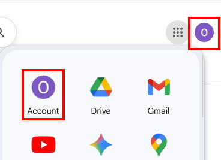 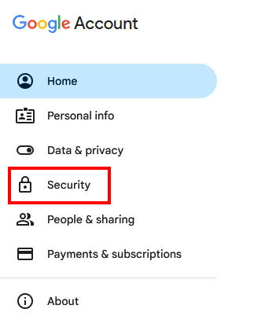
次に以下のURLのページを開いてください。
https://support.google.com/accounts/answer/185833?hl=en
もし開けない場合は「google account app password」などのキーワードでapp passwardsを作るページを探してください。
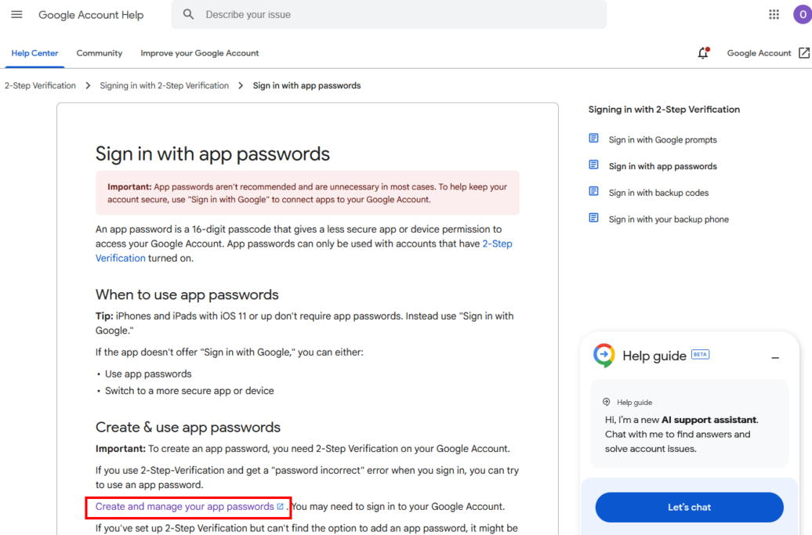
Create and manage your app passwordsを押すとApp nameを入力する画面になります。適当な名前を入力し、Createボタンを押すとApp passwordsが表示されます。これがOperantHouseに入力するSMTP passwordsになるのでメモしておいてください。
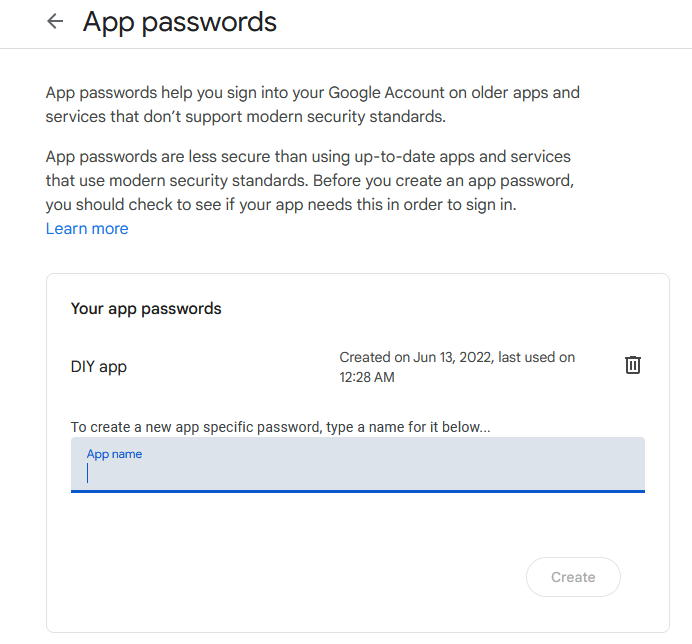
オペラントハウスのSetting2のSender addressに先ほど作成したgoogle accountのメールアドレスを、SMTP passwordにApp passwordsを入力すれば設定は完了です。
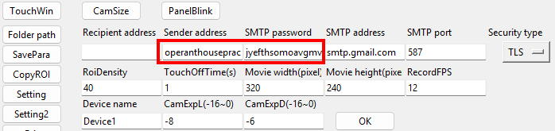
なお以下は他のパラメータの説明です。
- SMTP server: SMTPサーバー名 (Gmailの場合はsmtp.gmail.com)
- SMTP port: 使用するポート名 (Gmailの場合は587)
- Security type: 使用する暗号方式 (Gmailの場合はTLS)
- Device name: この名前が装置の名前としてメールで使われます。
1日複数回課題を行いたい場合
課題開始時間を複数入力すれば1日複数回課題が実行されます。開始時刻は4まで設定できます。
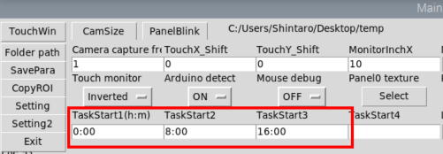
マウス検出ROIの検出ポイントの密度を変えたい場合
SettingのRoiDensityの値を大きくすると検出ポイントの密度が下がります。検出ポイントが減るとその分プログラムが軽くなりますが検出精度が下がります。
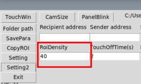
セーブデータの初期化
パラメータなどの設定値をデフォルトに戻したい場合や、何らかの理由でセーブデータが壊れてソフトが不具合を起こす場合、セーブデータを削除してオペラントハウスのソフトをサイド立ち上げるとデフォルトのセーブデータが自動的に生成されます。
特定の課題のパラメータのみを削除したい場合は課題に対応するフォルダを、それ以外の一般設定のデータを削除したい場合は"data"フォルダを削除してください。
またこれらのデータを他の装置にコピーすれば設定値を丸ごと移す事ができます。

パネル位置およびROIのパラメータの課題間のコピー
パネルの数と位置が同じ課題間では基本的にパネルの位置とROIのパラメータは同じになるのでどれかの課題で設定後、それを他の課題にコピーすると入力の手間が省けます。
方法はCopyROIボタンを押し、コピー元、コピー先の課題番号を入れればOKです。一度に複数の課題へコピーできます。
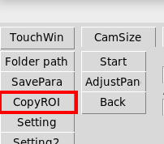
ROIの感度調整に役立つ機能
パネルの点灯、消灯時にROIが誤検出しないかチェックしたい場合、メインウィンドウのPanelBlinkボタンを押して点滅パネルを表示させて下さい（もう一度押すと消えます）。
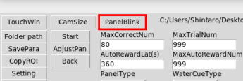
オペラントハウスを頻繁に移動させる場合
トレイを使うと便利です。
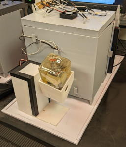
アダプターがかざばる
写真のようにアダプターが線の間にある場合、本体をオペラントハウスの本体内部に入れられます。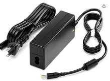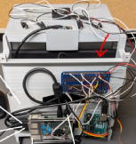
縦長の隣接したマスク穴だとカメラでどの穴にノーズポークしているのか区別できない
透明なアクリルやPVCなどの板でマスク穴の下部のみにしかノーズポークできなくすれば大丈夫です。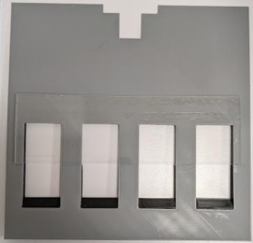
給水アームのサーボ速度を変える方法
Arduino用のプログラム（SerialConnectionWithPython**.ino）の四角で囲った数値を大きくするとサーボの動きがゆっくりになり、逆に1に近づけると早くなります。数値は整数にしてください。
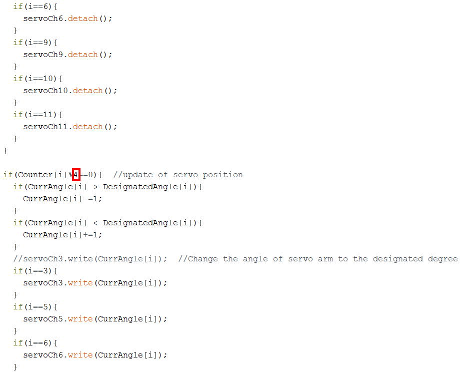
上にCueLEDを設置するとCueLEDの光がカメラに入って検出に影響する
CueLEDカバーを付けて下さい。
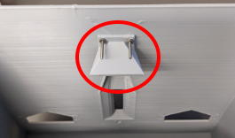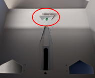
ラズパイが大学のwifiに繋がらない
大学によってはラズパイからのwifiアクセスが出来ない場合があります。その場合はスマートフォンやipod等のテザリング機能を使えば接続できます。ラズパイが大学のwifiに繋がらない
飲水量について
1回あたりの飲水量の目安は25-35ul程度です。減音Water arm, lever隙間調節板,ROIのアルゴリズムの解説